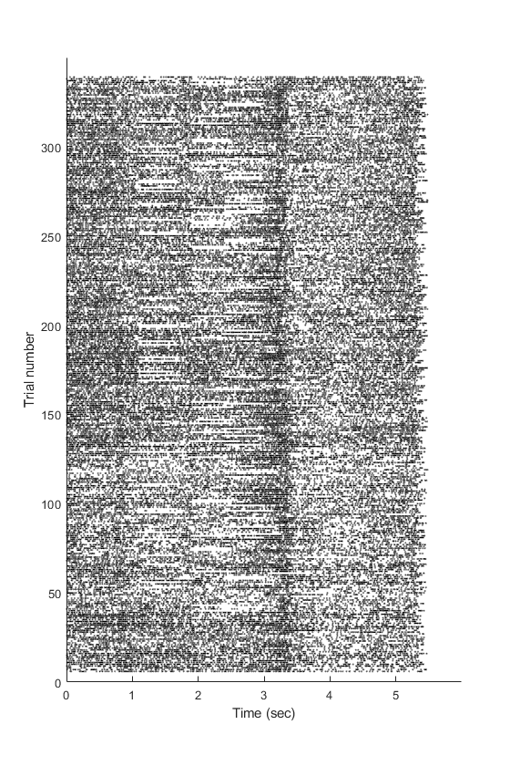

Using NWB Data
How to interface with Neurodata Without Borders files using MatNWB. We create a raster map of spikes extracted for the dataset extracted from the File Conversion Tutorial.
author: Lawrence Niu contact: lawrence@vidriotech.com last updated: Dec 26, 2018
Contents
Reading NWB Files
NWB files can be read using the nwbRead() function. This function returns an 'nwbfile' object which represents the nwb file structure.
nwb = nwbRead('out\ANM255200_20140911.nwb');
Constrained Sets
Analyzed data in NWB is placed under the analysis property, which is a Constrained Set. A constrained set consists of an arbitrary amount of key-value pairs representing properties. Constrained sets are so called because they are capable of basic type-checking, allowing for more constraints than simply using a Map.
You can get/set values in constrained sets using the methods .get() and .set() respectively, and retrieve all Set properties using the keys() method;
units = keys(nwb.analysis);
Accessing Data
The following line of code shows how to access nwb data.
startTimes = nwb.intervals.get('trials').start_time.data.load();
The line on its own can be quite intimidating but should be fairly intuitive when broken down.
nwb.intervals
This returns a Constrained Set containing interval data, with which we retrieve the "trials" table using the get() method. "trials" is a time interval (types.core.TimeInterval) which is a dynamic table (inherits from types.core.DynamicTable). Dynamic tables allow for an arbitrary number of columns.
start_time.data.load()
This call returns the column data in "start time". All datasets, by default, are not loaded by default and require an explicit call to load() to retrieve. You can identify unloaded data if the type is a `types.untyped.DataStub` instead of the actual data.
We now read from all units and plot out all detected spikes relative to their respective start times.
xs = []; ys = []; for i=1:length(units) u = nwb.analysis.get(units{i}); [tIdentifier, ~, tIndex] = unique(u.control.load()); unit_ts = u.timestamps.load(); for k=1:length(tIdentifier) id = tIdentifier(k); tLogical = tIndex == k; len = sum(tLogical); xs(end+1:end+len) = unit_ts(tLogical) - startTimes(id); ys(end+1:end+len) = id; end end
The raster plot of spikes look like this.
hScatter = scatter(xs, ys, 'Marker', '.', 'MarkerFaceColor', 'flat',... 'CData', [0 0 0], 'SizeData', 1); hAxes = hScatter.Parent; hAxes.YLabel.String = 'Trial number'; hAxes.XLabel.String = 'Time (sec)'; hAxes.XTick = 0:max(xs); hAxes.YTick = 0:50:max(ys); hAxes.Parent.Position(4) = hAxes.Parent.Position(4) * 2; snapnow;